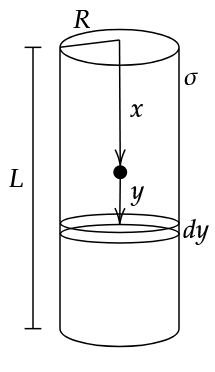

Consider the point to be at some position \(x\). From there, at a distance \(y\), consider of thin ring of thickness \(dy\). Find the force on the particle due to this ring, and hence all such rings by integrating \(y\) from \(-x\) to \(L-x\). We get,
\[F = {\sigma R q \over m \epsilon_0}\left[\frac{1}{\sqrt{R^2 + x^2}} - \frac{1}{\sqrt{R^2 + (L-x)^2}}\right]\]
Here, we can see that maximum velocity is attained at \({L\over2}\), which can be seen by substituting it in the previous equation.
Now, we can write \(F = ma\), and solve for \(v\).

\[v = \sqrt{ {\sigma R q \over m \epsilon_0} \ln\left|\frac{(x+\sqrt{x^2 + R^2})\left((L-x) + \sqrt{(L-x)^2+R^2}\right)}{R(L+\sqrt{L^2 + R^2})}\right|}\]
Which can also be written as,
\[v = \sqrt{ {\sigma R q \over m \epsilon_0} \left[ \sinh^{-1} \left( {x \over R} \right) + \sinh^{-1} \left( {L-x \over R} \right) - \sinh^{-1} \left( {L \over R}\right)\right]}\]
Where, \[\sinh^{-1} = \ln \lvert x + \sqrt{x^2 + 1}\rvert\] by definition.